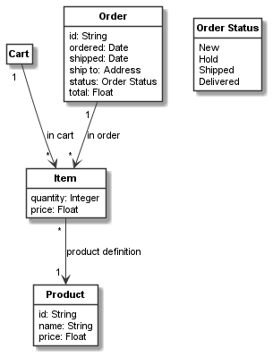

Class attributes¶
Defining attributes¶
Each class can have attributes of various types (for a full list of supported
attribute types see CClassifier).
We have already seen examples of int, float, and str attributes in the previous example:
item = CClass(domain_metaclass, "Item", attributes={
"quantity": int,
"price": float
})
product = CClass(domain_metaclass, "Product", attributes={
"id": str,
"name": str,
"price": float
})
Instead of using types in the attributes dictionary, we could also use default values from which the types are
guessed. For instance, if we like for products to have an empty name string as default and offer them per default
for free (i.e. the price is 0.0), we could define Product as follows:
product = CClass(domain_metaclass, "Product", attributes={
"id": str,
"name": "",
"price": 0.0
})
Introspecting attributes¶
The attributes above are defined using the attributes setter property of CClassifier, invoked
by a keyword argument. With the
corresponding getter, we can get a list of all attributes of a classifier. For example, to get all product attributes,
we can invoke product.attributes. This getter will return a list of objects of the type CAttribute.
Using CAttribute we can introspect all details of an attribute:
print('Product Attributes:')
for attribute in product.attributes:
print('- "%s": type "%s", classifier "%s", default "%s"' % (attribute.name, attribute.type,
attribute.classifier, attribute.default))
This would print the following result:
Product Attributes:
- "id": type "<class 'str'>", classifier "Product", default "None"
- "name": type "<class 'str'>", classifier "Product", default ""
- "price": type "<class 'float'>", classifier "Product", default "0.0"
Instead of getting the attribute objects, it is also possible to get the names of all attributes only, using the
attribute_names property of CAttribute. For example, the following code lists all
product attribute names:
print('Product Attributes: %s' % product.attribute_names)
This prints the following result:
Product Attributes: ['id', 'name', 'price']
Individual attributes can be inspected with get_attribute. The method returns the attribute’s
CAttribute object and can thus be used to inspect the attribute, e.g. as follows:
print('Default for price attribute = %s' % product.get_attribute("price").default)
This prints:
Default for price attribute = 0.0
Object and enumeration attributes¶
In addition to basic types, attributes can have object or enumeration types.
Enumeration are defined using CEnum with strings as possible enumeration values. For example, an order status
enumeration can be defined as follows:
order_status = CEnum("Order Status", values=["New", "Hold", "Shipped", "Delivered"])
Lets further consider we want to use two basic data objects for defining Date and Address properties:
date = CClass(domain_metaclass, "Date", attributes={
"day": int,
"month": int,
"year": int
})
address = CClass(domain_metaclass, "Address", attributes={
"street1": str,
"street2": str,
"zip": str,
"city": str,
"state": str,
"country": str
})
With this we can define an Order class that uses dates, an address, and the order status:
order = CClass(domain_metaclass, "Order", attributes={
"id": str,
"ordered": date,
"shipped": date,
"ship to": address,
"status": order_status,
"total": float
})
order_item_relation = order.association(item, "in order: [order] 1 -> [item in order] *")
Again, instead of the types we could use objects and enum values as defaults. For objects this is simple. For example,
consider we have defined an object today always set to the today’s date (before importing the
Python module containing order) , e.g. like this:
today = CObject(date, "today", values={
"day": 1,
"month": 5,
"year": 20
})
Then we could use today instead of date as the default value for the ordered attribute (not for shipped
as it is not clear, if the order will be ship on the same day as it is ordered).
For enumeration objects we need to use
CAttribute with type and default value, as the enumeration values are strings, and thus just
using an enumeration value such as "New" as a default value would be ambiguous, as it could not be
distinguished from the string "New". Both object and enumeration default values are used below:
order = CClass(domain_metaclass, "Order", attributes={
"number": str,
"ordered": today,
"shipped": date,
"ship to": address,
"status": CAttribute(type=order_status, default="New"),
"total": float
})
Resulting model¶
We can use the the Plant UML renderer to draw the resulting model like this:
shopping_model = CBundle("shopping_model2", elements=(cart.get_connected_elements() +
[order_status]))
generator = PlantUMLGenerator()
generator.generate_class_models("shopping_model2", [shopping_model, {}])
This script will generate the following UML class model:
The full code of the examples in this tutorial can be found in the sample Shopping Model 2.